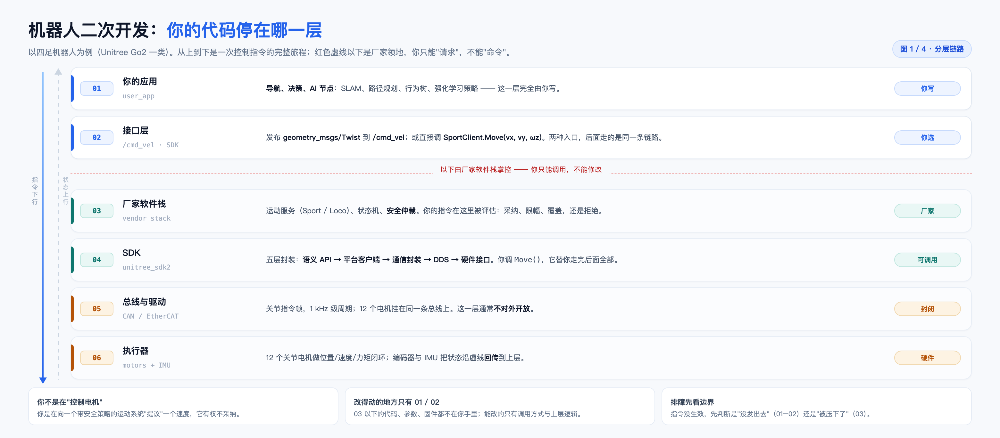
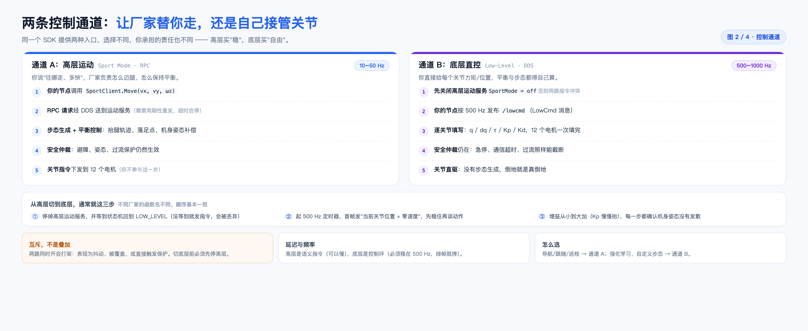
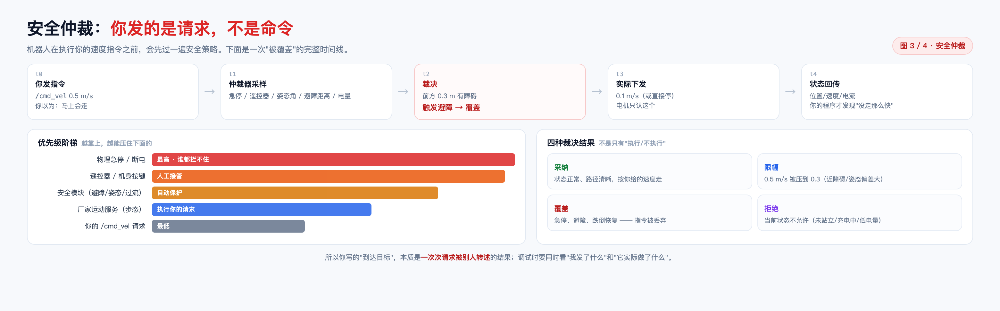
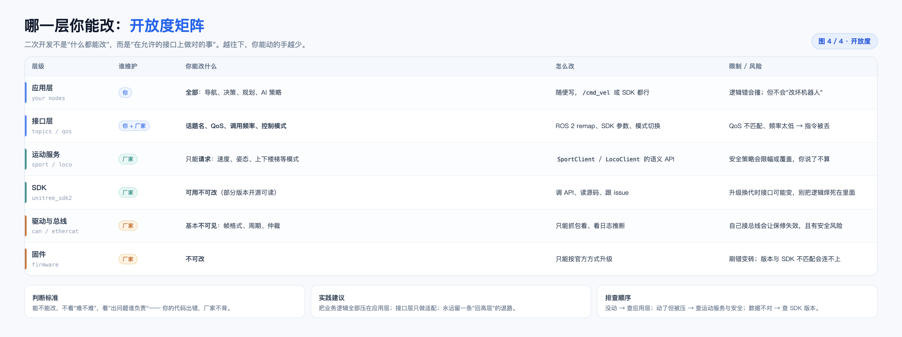
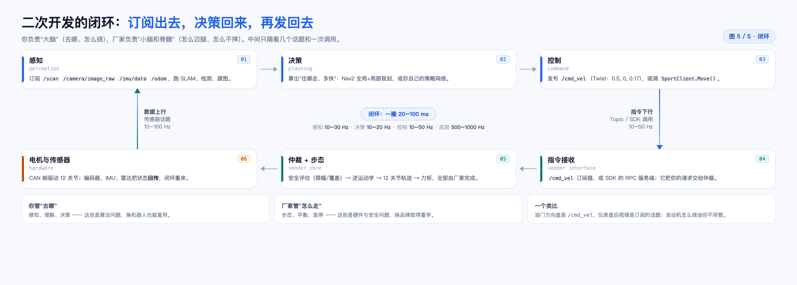

| 图 | 回答的问题 | 一句话结论 |
|---|---|---|
| 1 | 我的代码停在哪一层 | 只有 01 / 02 两层能改，03 以下只能调用 |
| 2 | 走高层还是底层 | 高层买"稳"，底层买"自由"，两者互斥 |
| 3 | 我的指令会不会被执行 | 是"请求"，会被限幅、覆盖、拒绝 |
| 4 | 哪一层我能改 | 越往下越封闭，判断标准是"谁负责" |
| 5 | 一圈怎么转起来 | 感知→决策→控制→执行→回传，20–100 ms |

红色虚线卡在第 2 层和第 3 层之间，这条线就是"你能改"与"你只能调"的分界。线以上全部由你写；线以下，代码、参数、固件都不在你手里。
这六层也不是抽象概念。换一台机器狗，01–02 基本照搬，03–05 全换 —— 所以判断一段代码"能不能复用"，看它落在哪一层就够了：落在应用层的能带走，落在接口层的要重写，落在 03 以下的带不走。
| 层 | 你在这里能做什么 |
|---|---|
| 01 应用层 | 导航、决策、AI 节点 —— 完全由你写 |
| 02 接口层 | 选入口：/cmd_vel 或 SportClient.Move() |
| 03 厂家软件栈 | 只能被评估：运动服务、状态机、安全仲裁 |
| 04 SDK | 可调用：语义 API → 平台客户端 → 通信封装 → DDS → 硬件接口 |
| 05 总线与驱动 | 基本不可见：CAN / EtherCAT 关节指令帧 |
| 06 执行器 | 12 个关节电机 + IMU，状态沿虚线回传 |
Move()，它替你走完 04 层内部全部。
同一个 SDK 提供两种入口，选哪个决定了你承担多少责任：通道 A 说"往哪走、多快"，步态与平衡由厂家负责；通道 B 直接给每个关节力矩或位置，平衡得自己算。
| 对比项 | A · 高层运动 | B · 底层直控 |
|---|---|---|
| 通信方式 | RPC（SportClient.Move） | DDS 发布 /lowcmd |
| 频率 | 10–50 Hz，需周期重发 | 500–1000 Hz，掉帧就摔 |
| 你负责 | 去哪、多快 | 每个关节的 q / dq / τ / Kp / Kd |
| 厂家负责 | 步态、落足点、姿态补偿 | 只剩安全与硬件 |
| 前提 | 站立且运动服务在运行 | 必须先关闭高层运动服务 |
| 适合 | 导航、跟随、巡检 | 强化学习、自定义步态 |
同时开会打架：表现为抖动、指令被覆盖，或直接触发保护。从高层切到底层通常就三步：
LOW_LEVEL（没等到就发指令，会被丢弃）；
图里画的是最容易让人困惑的场景：你发 0.5 m/s，机器人却只走了 0.1 m/s。中间发生了一次覆盖 —— 仲裁器发现前方 0.3 m 有障碍，触发了避障策略。
| 时刻 | 发生什么 | 说明 |
|---|---|---|
| t0 | 你发 /cmd_vel 0.5 m/s | 你以为马上会走 |
| t1 | 仲裁器采样 | 急停 / 遥控器 / 姿态角 / 避障距离 / 电量 |
| t2 | 裁决 | 前方 0.3 m 有障碍 → 触发避障 → 覆盖 |
| t3 | 实际下发 | 0.1 m/s（或直接停），电机只认这个 |
| t4 | 状态回传 | 你的程序才发现"没走那么快" |
物理急停 > 遥控器/机身按键 > 安全模块 > 厂家运动服务 > 你的请求（最低）。裁决也不只有"执行/不执行"，而是四种：采纳（按你给的走）、限幅（0.5 压到 0.3）、覆盖（急停/避障）、拒绝（未站立/充电中/低电量）。
/cmd_vel）与它实际做了什么（/odom、/lowstate）。/cmd_vel 与 /odom，把"请求速度"和"实际速度"画在一条时间轴上，被限幅的时刻一目了然。只看其中一条，永远只能猜。还有一个副作用值得记住：仲裁是无感的 —— 它不会给你的节点返回一个"被拒绝"的错误码。所以你的程序在代码层面上永远"发送成功"，失败只体现在结果里。

二次开发不是"什么都能改"，而是"在允许的接口上做对的事"。判断标准不是技术难不难，而是出问题谁负责 —— 你的代码出错，厂家不背。
| 层级 | 你能改什么 | 限制 / 风险 |
|---|---|---|
| 应用层 | 全部：导航、决策、规划、AI 策略 | 逻辑错会撞，但不会"改坏机器人" |
| 接口层 | 话题名、QoS、频率、控制模式 | QoS 不匹配、频率太低 → 指令被丢 |
| 运动服务 | 只能"请求"速度、姿态、模式 | 安全策略会限幅或覆盖 |
| SDK | 可用不可改（部分版本开源可读） | 升级换代接口会变 |
| 驱动与总线 | 基本不可见：帧格式、周期、仲裁 | 自己接总线会失保修，且有安全风险 |
| 固件 | 不可改 | 刷错变砖，版本不匹配会连不上 |
这张表还有第二个用处：评估风险。凡是落在"厂家"那一列的层，出问题只能等固件更新，你最多发个 issue；凡是落在"你"那一列的，出问题改一行代码就能验证。二次开发的自由度和排障速度，其实由这张表决定。
还有一个经常被忽略的边界：保修。拆机、刷第三方固件、自己往总线里发帧，多数厂家会直接判定失去保修；而这些动作恰好都在 04 层以下。所以"能不能改"里还有一条隐含规则：改得越深，越没人替你兜底。

① 感知 ──→ ② 决策 ──→ ③ 控制
↑ │
数据上行(10–100 Hz) 指令下行(10–50 Hz)
│ ↓
⑥ 硬件 ←── ⑤ 仲裁+步态 ←── ④ 指令接收
上半圈是你的代码：订阅 /scan、/camera/image_raw、/imu/data、/odom，跑 SLAM 与规划，再把速度意图发布出去。下半圈是厂家：接收请求、安全评估、逆运动学、关节轨迹，最后经 CAN 驱动电机。
/cmd_vel，仪表盘后视镜是订阅的话题；发动机怎么烧油、变速箱怎么换挡，你不用管。
闭环里有三层节奏：20–100 ms 是你的一圈（感知到指令），1–2 ms 是厂家的控制环（500–1000 Hz），1 s 以上 才是规划与行为层。把"走得不顺"归因到规划器，往往是因为控制环在 1 kHz 上已经在救场了 —— 你看到的是它救回来的结果，不是原因。
单看每一张都成立，但真正的理解发生在把它们连起来的时候。下面是一次"下达目标 → 被避障打断 → 绕行恢复"的完整过程。
| 时间 | 发生什么 | 对应 |
|---|---|---|
| 0.0 s | 上位机下发目标点（Action 或自定义接口） | 图 1 · 01 |
| 0.1 s | 规划器算出路径，开始发布 /cmd_vel 0.5 m/s | 图 5 · ②③ |
| 0.5 s | 雷达在前方 0.8 m 发现行人 | 图 1 · 01 |
| 0.55 s | 仲裁器把速度限到 0.2 m/s | 图 3 · t1–t3 |
| 0.6 s | 你的控制节点从 /odom 看到只有 0.2，但不知道原因 | 图 3 · t4 |
| 0.7 s | 局部规划器重新绕行 | 图 5 · ② |
| 1.2 s | 恢复 0.5 m/s，回到闭环 | 图 5 |
| 维度 | 你的决策（规划器） | 厂家的决策（仲裁） |
|---|---|---|
| 关注点 | 去哪、怎么绕、多快合适 | 会不会撞、会不会摔、是否超限 |
| 时间尺度 | 10–20 Hz，可重规划 | 更高频，随时可介入 |
| 失败后果 | 走错路、绕远 | 碰撞、摔倒、损坏 |
| 谁有权 | 提议 | 否决 |
ros2 topic hz /cmd_vel，频率掉到 1 Hz 以下，多半是控制节点卡了；/cmd_vel 与 /odom 对齐画图，若请求恒为 0.5、实际在 0.2 波动，就是仲裁在起作用；先确认链路通（话题有没有、频率对不对），再确认没被压制（仲裁有没有限幅），最后才调算法参数。反过来做，会把系统问题当成算法问题，越调越乱。
| # | 误区 | 实际情况 |
|---|---|---|
| 1 | 发了 /cmd_vel 就一定按这个速度走 | 它是请求，会被限幅或覆盖（图 3） |
| 2 | SDK 就是"驱动" | 它也是中间层，真正的 CAN 帧你看不到（图 1） |
| 3 | 底层控制更"高级" | 只是把责任转移给你：摔了算你的（图 2） |
| 4 | 换品牌只要换话题名 | 步态、安全策略、状态机完全不同（图 4） |
| 词 | 在这里指什么 |
|---|---|
| DDS | 分布式发布订阅中间件，ROS 2 的通信底座 |
| RPC | 远程过程调用，高层运动服务用它"点一下、执行一次" |
| QoS | 话题的可靠性 / 队列策略；不匹配会收不到数据 |
| Sport Mode | 厂家封装的高层运动模式，管步态与平衡 |
| LowCmd | 底层控制消息，逐关节给位置 / 速度 / 力矩 |
| 仲裁 | 把多个控制源按优先级合成一个实际输出 |
| 逆运动学 | 从"脚落在哪"反解出"各关节转多少" |
如果只记一件事：先把"请求"和"结果"分开看。请求是你代码的输出，结果是你算法的输入；两者之间的差额，就是厂家系统的全部工作（步态、平衡、安全）。能把这个差额说清楚，才算真正理解了二次开发。
| 文件 | 说明 |
|---|---|
assets/2026-11-机器人二次开发-图1-分层链路.png | 3120 × 1368，回答"你在哪一层" |
assets/2026-11-机器人二次开发-图2-两条通道.png | 3120 × 1280，高层 / 底层两条路 |
assets/2026-11-机器人二次开发-图3-安全仲裁.png | 3120 × 1080，时间线与优先级 |
assets/2026-11-机器人二次开发-图4-开放度矩阵.png | 3120 × 1168，六层开放度 |
assets/2026-11-机器人二次开发-图5-闭环.png | 3120 × 1120，感知到执行再回传 |
assets/_make_robot_note.html | 本 PDF 的排版源文件 |
2026-11-机器人二次开发.md | Markdown 版，便于检索摘抄 |
CHROME="/Applications/Google Chrome.app/Contents/MacOS/Google Chrome" cd "三维视觉" # 本笔记所在目录 "$CHROME" --headless=new --disable-gpu --no-pdf-header-footer \ --print-to-pdf="2026-11-机器人二次开发.pdf" \ "file://$PWD/assets/_make_robot_note.html"
正文用宋体排 10.2pt / 1.75 倍行距，标题与表格用苹方；A4 满版，每页固定页眉页脚与页码。五张图按"结构 → 通道 → 仲裁 → 权限 → 闭环"的顺序排列，最后一页串讲把它们连成一次真实的 30 秒。
内容与 Markdown 版一致，区别只在阅读体验：Markdown 适合检索与摘抄，PDF 适合从头读到尾。